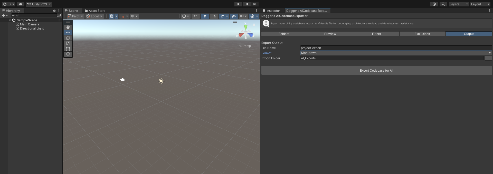
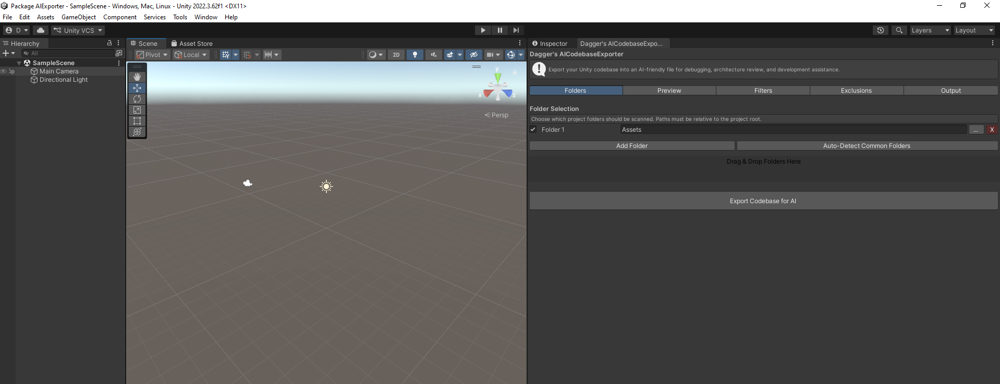
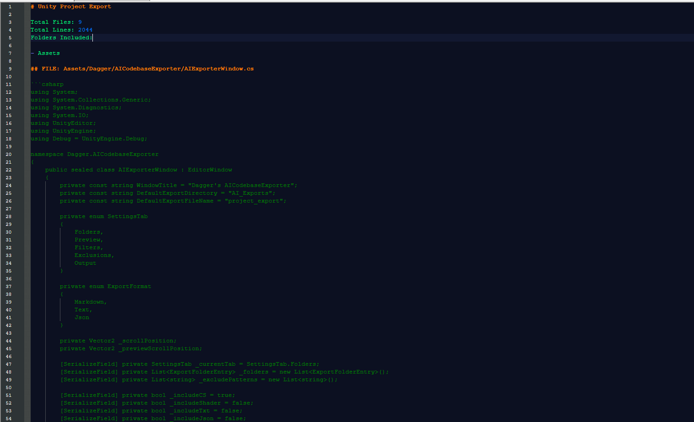

Overview
Dagger's AI Codebase Exporter was built to solve a real workflow problem: using AI effectively with Unity projects. In practice, Unity codebases are spread across many folders, mixed with plugins, packages, and unrelated files — making it difficult to give AI tools the right context. Manual export is tedious, noisy, and often incomplete.
This tool creates a professional workflow for selecting, previewing, filtering, and exporting only the relevant parts of a codebase. Instead of copy-pasting scripts by hand, developers generate a structured export optimized for AI consumption — improving response quality and cutting the friction out of debugging or understanding large projects.
Problem → Solution
The problem
AI tools are powerful for Unity development, but they perform poorly when given incomplete or noisy context. Exporting the right files by hand wastes time, and most projects are full of irrelevant code and third-party content that pollutes the prompt.
The solution
The Exporter gives developers full control over what gets exported: folder selection, smart filtering, an interactive preview tree, and multiple export formats — producing structured output designed specifically for AI-assisted workflows.
Key features
- Dynamic folder selection with add / remove controls.
- Drag & drop folder input for faster setup.
- Interactive codebase preview tree with expandable hierarchy.
- Per-folder include / exclude controls.
- Automatic detection of external and vendor folders.
- Bulk actions: Include All, Exclude External, Expand / Collapse All.
- Exports .cs plus optional .shader, .txt, .json, and .asset files.
- Custom exclude patterns to filter plugins and third-party code.
- Export formats for Markdown, plain text, and JSON.
- Structured output with file paths, sections, and summary metadata.
- Overwrite protection and automatic reveal of exported files in the OS.
- Editor-only architecture with zero runtime impact.
Technical highlights
- Built entirely as a Unity
EditorWindowtool. - Modular architecture separating UI, scanning, filtering, preview, and export building.
- Designed to handle larger codebases efficiently.
- UTF-8 safe file reading for robust text export.
- Tab-based interface focused on clarity and usability.
- Production-oriented design, not a prototype-level implementation.
What this project shows
This project demonstrates advanced Unity Editor scripting, strong system architecture, and a product-oriented approach to tool development. It reflects not only technical implementation, but the ability to identify a real developer pain point, design around a practical workflow, and deliver an asset with professional polish.
More specifically, it showcases my ability to build modular editor tools, design developer-facing UI, structure complex workflows clearly, and think beyond code toward usability, clarity, and real production value.
Screenshots



Get the Exporter
Available now on the Unity Asset Store — 47 downloads and counting.